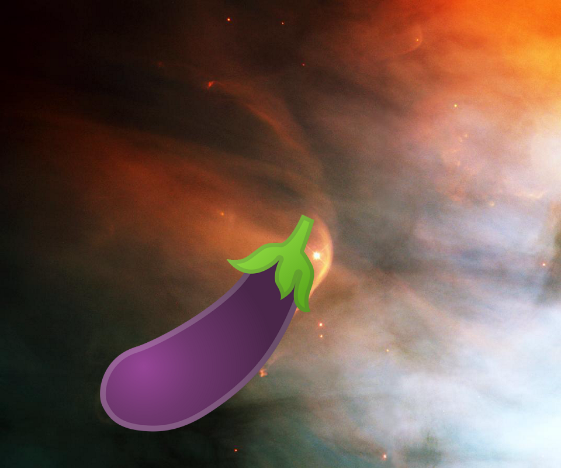
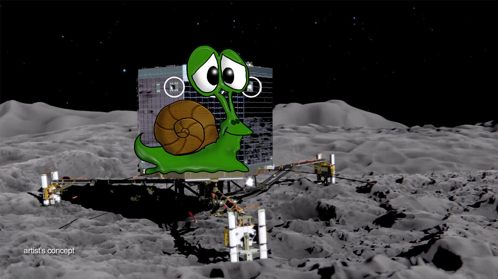
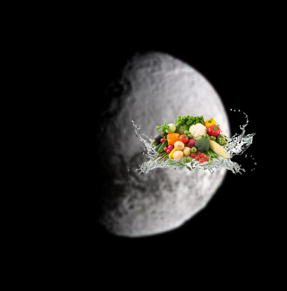
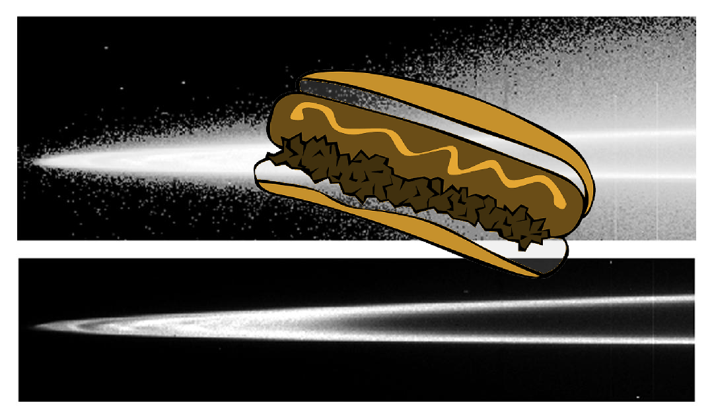
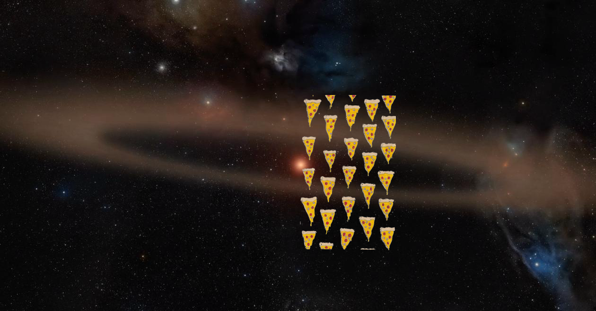

-
An Unexpected Discovery – Bright-dark boundary and topographical model.
-
A Mystery – A New View of the Tarantula Nebula.
-
 A Mystery + Close-up of M27, the Dumbbell Nebula.
A Mystery + Close-up of M27, the Dumbbell Nebula. -
An Unexpected Discovery – Cryptic Terrain on Mars
-
??? + Splendid Saturn.
-
A Mystery @ Neptune Clouds.
-
 An Unexpected Discovery + A nitrogen-rich nebula.
An Unexpected Discovery + A nitrogen-rich nebula. -
Something Strange + Flag of the U.S. deployed on surface of the Moon
-
A Mystery on Saturn Northern Hemisphere
-
Something Strange, An Unexpected Discovery on Planetary Nebula!
-
An Unexpected Discovery | Orion Nebula and Bow Shock!
-
Something Strange – Bright Devil Streaks
-
Something Strange + Calcium and Magnesium in Mercury Exosphere.
-
 A Mystery + Petite Moon!
A Mystery + Petite Moon! -
Something Strange | Dwarf Planet Ceres, Artist Impression!
-
An Unexpected Discovery – K2 Finds Earth-Sized Planets Artist Concept!
-
Something Strange | Clues in the Bright and Dark.
-
An Unexpected Discovery @ Hubble Catches a Galaxy Duo by the "Hare"!
-
A Mystery | Philae Descent and Science of the Surface.
-
An Unexpected Discovery @ Backwards Spiral Galaxy
-
Something Strange @ On the Bright Side!
-
Something Strange on Bright Dust Devil Tracks
-
 A Mystery – North America Nebula in Different Lights.
A Mystery – North America Nebula in Different Lights. -
Something Strange ; Galaxy NGC5398!
-
Something Strange – Oblique Impacts in Color
-
Something Strange + Jupiter Main Ring and Halo
-
A Mystery ; Bright Dunes.
-
An Unexpected Discovery @ Young Star and Its Infant Planet (Artist animation).
-
A Mystery @ Anatomy of a Torn Comet.
-
 Something Strange – Dispersing Light through the Moon Mineralogy Mapper.
Something Strange – Dispersing Light through the Moon Mineralogy Mapper. -
 Something Strange | Supermassive and super-hungry.
Something Strange | Supermassive and super-hungry. -
 An Unexpected Discovery – A Flame in Orion Belt
An Unexpected Discovery – A Flame in Orion Belt -
An Unexpected Discovery, An Unexpected Discovery, Something Strange ; Ring Shapers
-

-
???, Something Strange, An Unexpected Discovery, Something Strange, A Mystery + Family Portrait of Pluto Moons
-
 Something Strange on Galaxy UGC10445!
Something Strange on Galaxy UGC10445! -
 A Mystery on Proposed Missions - Terrestrial Planet Finder!
A Mystery on Proposed Missions - Terrestrial Planet Finder! -
 Something Strange on Active Processes: Bright Streaks and Dark Fans.
Something Strange on Active Processes: Bright Streaks and Dark Fans. -
 A Mystery + Kertész Shines Bright Like a Diamond
A Mystery + Kertész Shines Bright Like a Diamond -
 A Mystery @ Neutron star Interior Composition Explorer (NICER)!
A Mystery @ Neutron star Interior Composition Explorer (NICER)!